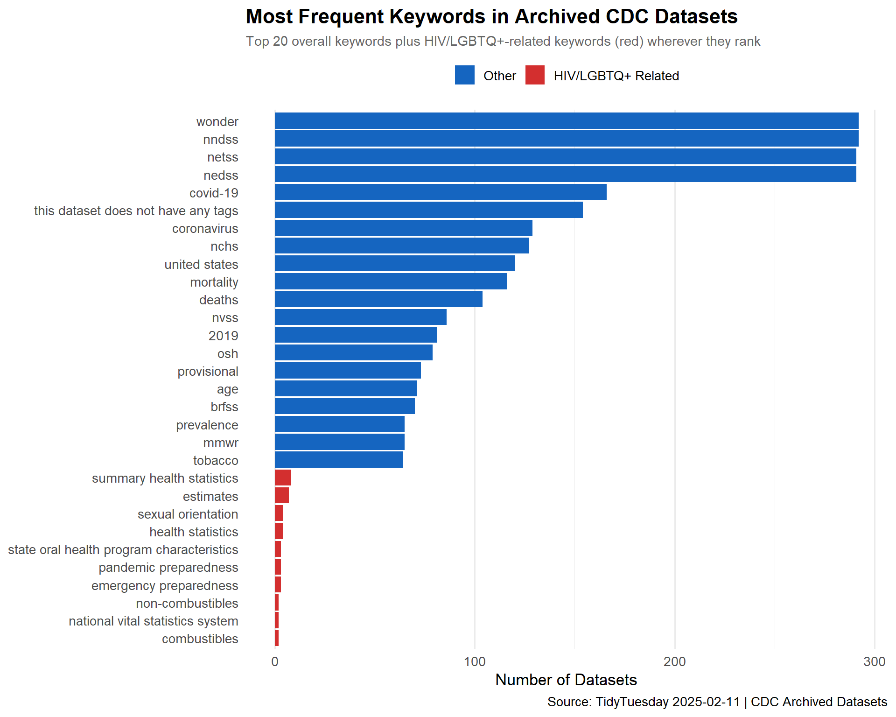
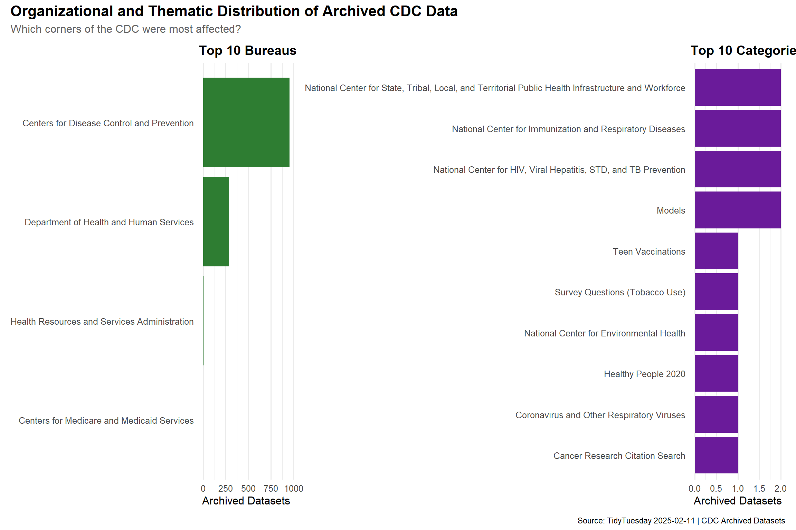
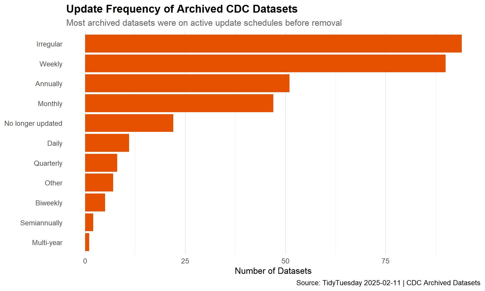

This week’s dataset documents CDC datasets that were archived before the Trump administration purged health agency websites of LGBTQ+ and HIV-related content. The data includes metadata for 1,257 archived datasets along with Federal Program Inventory (FPI) codes and OMB bureau codes that map programs to their parent agencies.
The Infectious Disease Society of America emphasized that “removal of HIV- and LGBTQ-related resources…creates a dangerous gap in scientific information” crucial for disease professionals and outbreak response.
Which Bureaus and Programs contain the most archived datasets?
What keywords appear most frequently across datasets?
Loading necessary packages
My handy booster pack that allows me to install (if needed) and load my usual and favorite packages, as well as some helpful functions.
raw <- tidytuesdayR::tt_load('2025-02-11')cdc_datasets <- raw$cdc_datasetsfpi_codes <- raw$fpi_codesomb_codes <- raw$omb_codes
Exploratory Data Analysis
The my_skim() function is a modified version of the skimr::skim() function that returns the number of missing data points (cells as NA) as well as the inverse (e.g.: number of rows that are notNA), the count, minimum, 25%, median, 75%, max, mean, geometric mean, and standard deviation. It also generates a little ASCII histogram. Neat!
CDC Datasets
The CDC datasets table is primarily character columns (URLs, tags, contact info), so we’ll focus on completeness patterns rather than numeric summaries. Columns like footnotes, license, described_by, and glossary_methodology are likely sparse and less analytically useful.
The key columns for our analysis are category, tags, bureau_code, program_code, and public_access_level. The tags column contains comma-separated keywords that we can tokenize for text analysis.
FPI Codes
fpi_codes %>%skim()
Data summary
Name
Piped data
Number of rows
1554
Number of columns
6
_______________________
Column type frequency:
character
6
________________________
Group variables
None
Variable type: character
skim_variable
n_missing
complete_rate
min
max
empty
n_unique
whitespace
agency_name
0
1.00
11
45
0
25
0
program_name
0
1.00
4
190
0
1496
0
additional_information_optional
1464
0.06
18
50
0
17
0
agency_code
0
1.00
3
3
0
25
0
program_code
0
1.00
7
7
0
1554
0
program_code_pod_format
0
1.00
7
7
0
1554
0
OMB Codes
omb_codes %>%skim()
Data summary
Name
Piped data
Number of rows
368
Number of columns
6
_______________________
Column type frequency:
character
3
numeric
3
________________________
Group variables
None
Variable type: character
skim_variable
n_missing
complete_rate
min
max
empty
n_unique
whitespace
agency_name
0
1
12
81
0
134
0
bureau_name
0
1
4
84
0
359
0
treasury_code
0
1
1
2
0
74
0
Variable type: numeric
skim_variable
n_missing
complete_rate
mean
sd
p0
p25
p50
p75
p100
hist
agency_code
0
1.00
161.40
211.68
1
9.75
22.0
352.75
920
▇▂▂▁▁
bureau_code
0
1.00
20.61
25.26
0
0.00
11.0
30.50
97
▇▂▁▁▁
cgac_code
28
0.92
131.96
193.05
0
13.75
49.5
91.00
920
▇▁▂▁▁
Joining Datasets: Mapping Programs to Bureaus
Before diving into the analysis, we need to connect the CDC dataset metadata to the organizational structure provided by the FPI and OMB code tables. The bureau_code and program_code columns in cdc_datasets serve as keys to look up human-readable agency and program names.
# Parse bureau_code into agency and bureau components# Format is "agency_code:bureau_code" e.g., "009:20"cdc_enriched <- cdc_datasets %>%separate( bureau_code,into =c("agency_code_str", "bureau_code_str"),sep =":",remove =FALSE,fill ="right" ) %>%mutate(agency_code_num =as.numeric(agency_code_str),bureau_code_num =as.numeric(bureau_code_str) ) %>%left_join( omb_codes,by =c("agency_code_num"="agency_code", "bureau_code_num"="bureau_code") ) %>%left_join( fpi_codes %>%select(program_name, program_code_pod_format),by =c("program_code"="program_code_pod_format") )cdc_enriched %>%count(bureau_name, sort =TRUE) %>%head(10)
# A tibble: 5 × 2
bureau_name n
<chr> <int>
1 Centers for Disease Control and Prevention 953
2 Department of Health and Human Services 285
3 <NA> 12
4 Health Resources and Services Administration 6
5 Centers for Medicare and Medicaid Services 1
Which Bureaus and Programs Hold the Most Archived Data?
The tags column contains comma-separated keywords describing each dataset. By tokenizing these tags, we can see which public health topics are most represented in the archived data.
# Tokenize the tags column — each tag is comma-separatedkeyword_counts <- cdc_datasets %>%select(tags) %>%filter(!is.na(tags)) %>%separate_rows(tags, sep =",") %>%mutate(tags =str_trim(str_to_lower(tags))) %>%filter(tags !="") %>%count(tags, sort =TRUE)keyword_counts %>%head(20) %>%gt() %>%tab_header(title ="Top 20 Keywords Across Archived CDC Datasets" ) %>%cols_label(tags ="Keyword",n ="Frequency" )
Top 20 Keywords Across Archived CDC Datasets
Keyword
Frequency
nndss
292
wonder
292
nedss
291
netss
291
covid-19
166
this dataset does not have any tags
154
coronavirus
129
nchs
127
united states
120
mortality
116
deaths
104
nvss
86
2019
81
osh
79
provisional
73
age
71
brfss
70
mmwr
65
prevalence
65
tobacco
64
Categorizing Keywords by Public Health Domain
To understand the thematic landscape, we can group keywords into broader public health domains and see how the archived data breaks down.
# Flag keywords related to the purge's stated focushiv_lgbtq_keywords <-c("hiv","aids","lgbtq","lesbian","gay","bisexual","transgender","sexual orientation","gender identity","sexual health","sti","sexually transmitted","prep","antiretroviral","hiv/aids","hiv prevention","men who have sex with men","msm")keyword_flagged <- keyword_counts %>%mutate(hiv_lgbtq_related =str_detect( tags,str_c(hiv_lgbtq_keywords, collapse ="|") ) )hiv_lgbtq_summary <- keyword_flagged %>%group_by(hiv_lgbtq_related) %>%summarize(unique_keywords =n(),total_occurrences =sum(n),.groups ="drop" )hiv_lgbtq_summary %>%gt() %>%tab_header(title ="HIV/LGBTQ+ Related Keywords vs. Other Keywords" ) %>%cols_label(hiv_lgbtq_related ="HIV/LGBTQ+ Related",unique_keywords ="Unique Keywords",total_occurrences ="Total Occurrences" )
HIV/LGBTQ+ Related Keywords vs. Other Keywords
HIV/LGBTQ+ Related
Unique Keywords
Total Occurrences
FALSE
1325
9484
TRUE
31
63
Important
The removal of these datasets doesn’t just affect researchers studying HIV or LGBTQ+ health. Many of these datasets are cross-cutting — surveillance data, behavioral surveys, and demographic health indicators that inform a wide range of public health decisions.
Dataset Access Levels
Understanding which datasets were public vs. restricted helps quantify the transparency impact.
cdc_datasets %>%count(public_access_level, sort =TRUE) %>%gt() %>%tab_header(title ="Distribution of Public Access Levels" ) %>%cols_label(public_access_level ="Access Level",n ="Count" )
# Pull HIV/LGBTQ+ keywords that actually appear in the datahiv_lgbtq_hits <- keyword_flagged %>%filter(hiv_lgbtq_related) %>%arrange(desc(n))# Combine: top 20 overall + any HIV/LGBTQ+ keywords not already in the top 20top_overall <- keyword_counts %>%head(20)hiv_extras <- hiv_lgbtq_hits %>%filter(tags %ni% top_overall$tags)combined_kw <-bind_rows( top_overall %>%mutate(hiv_lgbtq = tags %in% hiv_lgbtq_hits$tags), hiv_extras %>%head(10) %>%mutate(hiv_lgbtq =TRUE) %>%select(-hiv_lgbtq_related)) %>%distinct(tags, .keep_all =TRUE) %>%mutate(tags =fct_reorder(tags, n))p_keywords <-ggplot(combined_kw, aes(x = n, y = tags, fill = hiv_lgbtq)) +geom_col() +scale_fill_manual(values =c("TRUE"="#D32F2F", "FALSE"="#1565C0"),labels =c("TRUE"="HIV/LGBTQ+ Related", "FALSE"="Other"),name =NULL ) +labs(title ="Most Frequent Keywords in Archived CDC Datasets",subtitle ="Top 20 overall keywords plus HIV/LGBTQ+-related keywords (red) wherever they rank",x ="Number of Datasets",y =NULL,caption ="Source: TidyTuesday 2025-02-11 | CDC Archived Datasets" ) +theme_minimal(base_size =13) +theme(plot.title =element_text(face ="bold", size =16),plot.subtitle =element_text(color ="gray40", size =11),legend.position ="top",panel.grid.major.y =element_blank() )p_keywords

Datasets by Category and Bureau
p_bureau <-ggplot(top_bureaus, aes(x = n, y = bureau_name)) +geom_col(fill ="#2E7D32") +labs(title ="Top 10 Bureaus",x ="Archived Datasets",y =NULL ) +theme_minimal(base_size =12) +theme(plot.title =element_text(face ="bold"),panel.grid.major.y =element_blank() )p_category <-ggplot( category_counts %>%tail(10),aes(x = n, y = category)) +geom_col(fill ="#6A1B9A") +labs(title ="Top 10 Categories",x ="Archived Datasets",y =NULL ) +theme_minimal(base_size =12) +theme(plot.title =element_text(face ="bold"),panel.grid.major.y =element_blank() )p_bureau + p_category +plot_annotation(title ="Organizational and Thematic Distribution of Archived CDC Data",subtitle ="Which corners of the CDC were most affected?",caption ="Source: TidyTuesday 2025-02-11 | CDC Archived Datasets",theme =theme(plot.title =element_text(face ="bold", size =16),plot.subtitle =element_text(color ="gray40", size =12) ) )

Update Frequency of Archived Datasets
Understanding how frequently these datasets were being updated before archival tells us something about how “alive” the data was.
# Decode ISO 8601 duration codes and normalize free-text entriesupdate_freq <- cdc_datasets %>%filter(!is.na(update_frequency)) %>%mutate(update_label =case_when(str_detect(str_to_lower(update_frequency), "r/p1d|daily") ~"Daily",str_detect(str_to_lower(update_frequency),"r/p1w|weekly|weekdays" ) ~"Weekly",str_detect(str_to_lower(update_frequency),"r/p2w|biweekly|two weeks" ) ~"Biweekly",str_detect(str_to_lower(update_frequency), "r/p1m|monthly") ~"Monthly",str_detect(str_to_lower(update_frequency),"r/p3m|quarterly" ) ~"Quarterly",str_detect(str_to_lower(update_frequency),"r/p6m|semiannual" ) ~"Semiannually",str_detect(str_to_lower(update_frequency), "r/p1y|annual") ~"Annually",str_detect(str_to_lower(update_frequency),"r/p2y|r/p4y|r/p5y" ) ~"Multi-year",str_detect(str_to_lower(update_frequency),"irregular|continuous" ) ~"Irregular",str_detect(str_to_lower(update_frequency),"no longer|not updated|archived|will not be" ) ~"No longer updated",TRUE~"Other" ) ) %>%count(update_label, sort =TRUE) %>%mutate(update_label =fct_reorder(update_label, n))ggplot(update_freq, aes(x = n, y = update_label)) +geom_col(fill ="#E65100") +labs(title ="Update Frequency of Archived CDC Datasets",subtitle ="Most archived datasets were on active update schedules before removal",x ="Number of Datasets",y =NULL,caption ="Source: TidyTuesday 2025-02-11 | CDC Archived Datasets" ) +theme_minimal(base_size =13) +theme(plot.title =element_text(face ="bold", size =16),plot.subtitle =element_text(color ="gray40"),panel.grid.major.y =element_blank() )

Final thoughts and takeaways
The 1,257 archived CDC datasets represent a broad cross-section of the agency’s public health surveillance and reporting infrastructure. The data is not narrowly scoped to HIV or LGBTQ+ health — it spans chronic disease surveillance, environmental health, injury prevention, and population-level health indicators. The keyword analysis reveals that while HIV- and LGBTQ+-related terms are present, the majority of affected datasets cover general public health topics, suggesting that the purge cast a wider net than its stated focus.
The organizational breakdown shows that the bulk of archived data came from a small number of CDC bureaus, concentrating the knowledge gap in specific programmatic areas. Many of these datasets were being updated on annual or more frequent cycles, meaning they were actively maintained resources — not stale archives gathering dust. Their removal creates gaps in longitudinal data that may be difficult or impossible to reconstruct.
Note
The archival effort that produced this dataset was a proactive response by civil society and data preservation organizations. The fact that this metadata exists at all is thanks to groups who anticipated the purge and acted to document what was publicly available before it disappeared.
The broader implication is structural: when public health data disappears from federal servers, it doesn’t just affect researchers. Clinicians, state health departments, epidemiologists tracking outbreaks, and community health organizations all lose access to the evidence base they rely on for decision-making. Data removal is, in practice, a form of policy change that bypasses the legislative process.